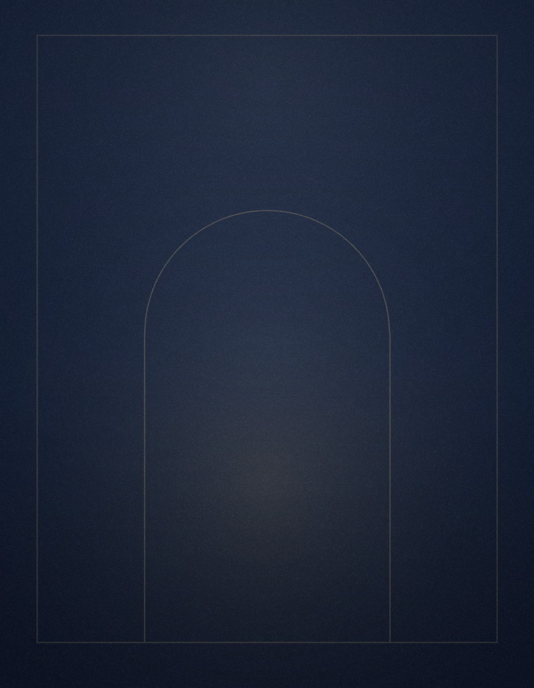

Comparto una visión sobre el liderazgo que construye personas, la diplomacia del deporte y la cultura, y una Iberoamérica que conversa de igual a igual con el mundo.
Las instituciones valen lo que vale su gente. Qué hace un líder cuando lo entiende de verdad.
Caer, levantarse y seguir creciendo: el carácter como obra de cada etapa.
Educación, deporte y cultura como diplomacia económica: transformar la afinidad en desarrollo.
Mujeres, siguiente generación y el arte de encontrar la propia voz.
Conferencia magistral · Diálogo o conversación en escenario · Sesión de trabajo con consejos y comités de dirección · Encuentros con familias empresarias.
Español · English · Français · Português
